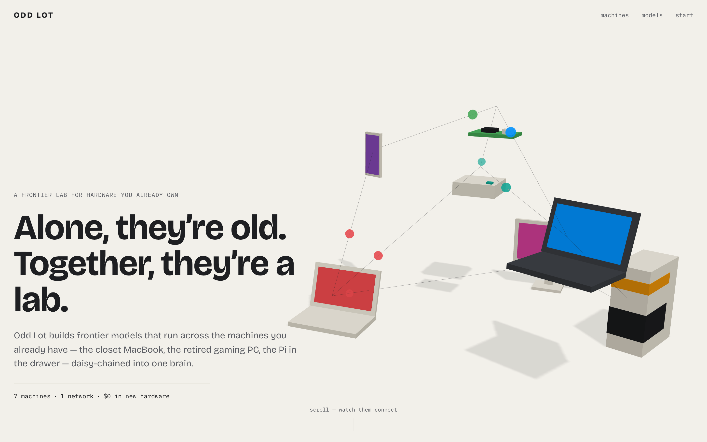
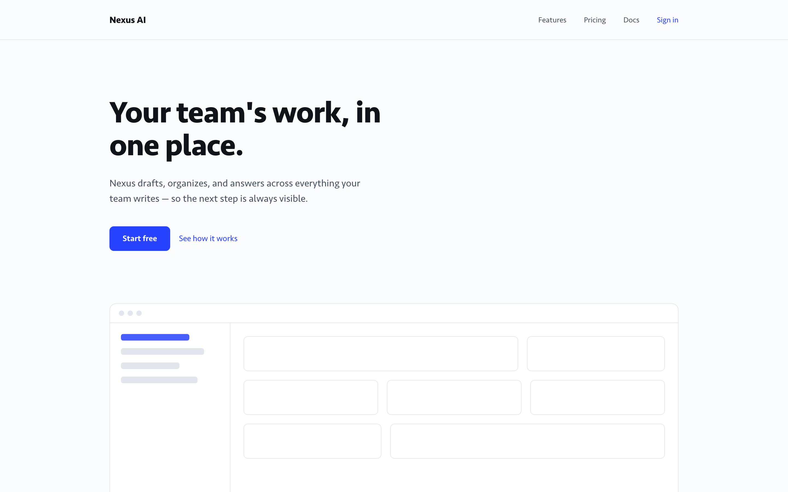
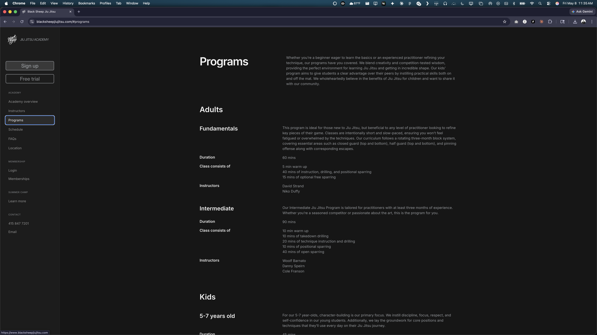
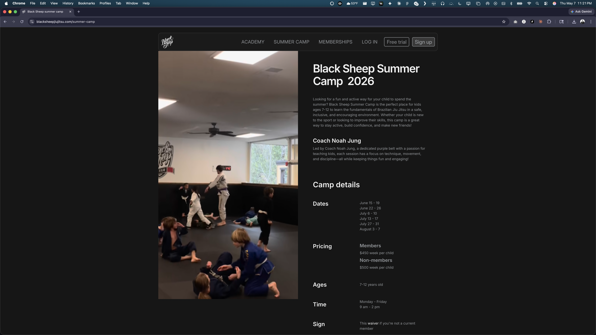

HighLvl
An AI nutrition coach — designed, built, and shipped by one designer directing a fleet of AI agents in under a week. Live on the App Store; Android in beta.


An AI nutrition coach — designed, built, and shipped by one designer directing a fleet of AI agents in under a week. Live on the App Store; Android in beta.
An MCP server that gives any MCP-capable AI assistant access to a curated design knowledge graph — patterns, principles, and frameworks for designing with AI.



TELL ME WHO YOU ARE


TELL ME WHO YOU ARE


TELL ME WHO YOU ARE

Brand system, marketing site, and the platform that runs the whole business — designed and built end-to-end around an existing logo.

